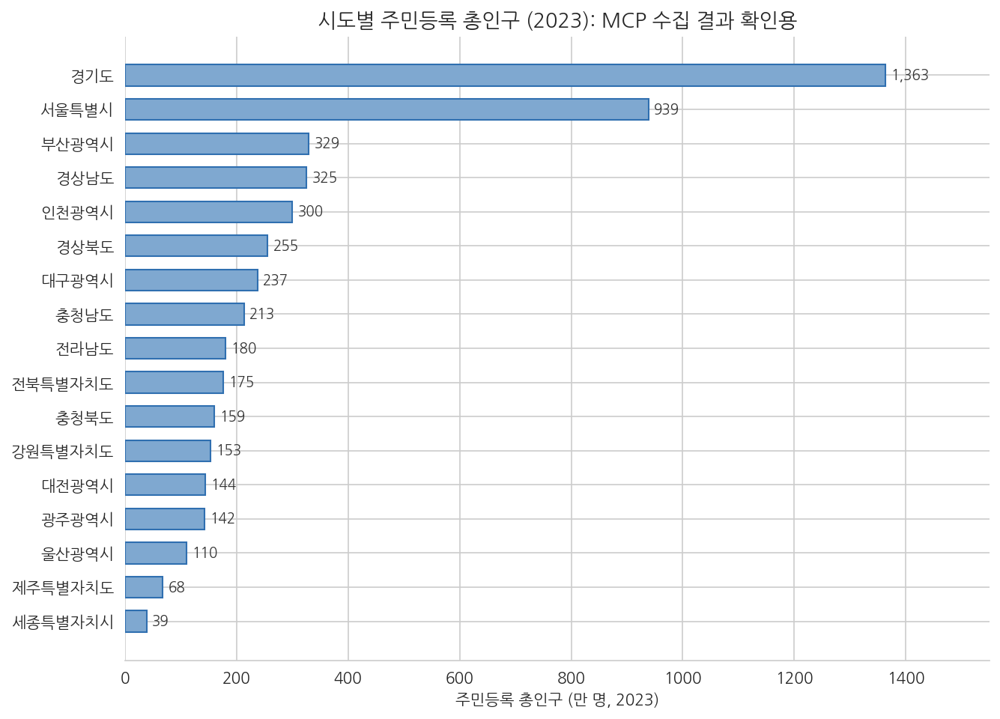

6주차 2회차. 에이전트로 API 수집 파이프라인 만들기
이 실습에서 하는 것
1회차에서 API라는 약속(엔드포인트·파라미터·인증키)과 JSON 읽는 법을 배웠다. 이번 실습의 목표는 그 약속을 실제로 써서, "인증키 발급 → 에이전트에게 수집 스크립트 작성 지시 → 결과 검증 → CSV 저장과 기록"으로 이어지는 수집 파이프라인 한 벌을 완성하는 것이다. 연습 주제는 시도별 주민등록 인구(2023년)로 정한다. 결과를 포털 화면과 대조하기 쉬운, 검증 연습에 알맞은 데이터이기 때문이다.
이 실습이 끝나면 프로젝트 폴더에 다음 세 가지가 남는다.
scripts/collect_kosis.py: 에이전트가 작성한 수집 스크립트 (수집 절차의 기록이기도 하다)data/sido_pop_2023.csv: 17개 시도의 2023년 주민등록 총인구수집기록.md: 언제, 어디서, 어떤 조건으로 받았고 어떻게 검증했는지의 기록
파일 세 개가 세트라는 점이 오늘의 요지다. 데이터만 있으면 "어디서 났는지 모르는 숫자"이고, 스크립트와 기록이 함께 있어야 1회차에서 배운 재현 가능한 수집이 된다.
준비물
| 구분 | 내용 |
|---|---|
| 폴더 | 4주차에 만든 uv 분석 프로젝트 (pandas 설치됨. requests가 없다면 이번 실습 중 에이전트에게 추가를 지시한다) |
| 계정 | KOSIS 회원가입에 쓸 이메일 주소 |
| 도구 | VSCode + Claude Code, 웹 브라우저 |
| 선수 내용 | 6주차 1회차(API, JSON), 4주차 2회차(uv 프로젝트), 5주차 2회차(내 프로젝트 데이터) |
2.1 인증키 발급받기
첫 단계는 사람 몫이다. 인증키는 "내 이름으로 쓰는 회원증"이므로 발급 절차(회원가입과 신청)는 에이전트가 대신할 수 없고, 대신해서도 안 된다.
KOSIS 공유서비스에서 발급받기. 브라우저에서 kosis.kr/openapi(KOSIS 공유서비스)에 접속한다. 큰 흐름은 다음과 같다. 화면 구성과 문구는 바뀔 수 있으므로 단추 이름을 외우지 말고 흐름으로 기억하자.
- KOSIS 회원가입을 하고 로그인한다.
- 공유서비스의 활용신청(인증키 신청) 메뉴에서 신청서를 제출한다. 어디에 쓸 것인지 간단히 적는 정도다.
- 발급된 인증키를 확인한다. 인증키는 영문·숫자·기호가 섞인 긴 문자열이다.
공공데이터포털도 같은 흐름이다. 이번 실습은 KOSIS로 진행하지만, 학기 프로젝트에서 공공데이터포털의 API를 쓸 사람을 위해 흐름만 밝혀 둔다. data.go.kr에서 회원가입 → 원하는 데이터를 검색해 상세 화면에서 활용신청 → 많은 API는 즉시 자동승인되지만 일부는 심의를 거쳐 며칠 걸림 → 마이페이지에서 인증키(serviceKey)를 확인한다. 심의가 필요한 API를 쓸 계획이라면 과제 마감보다 넉넉히 앞서 신청해 두어야 한다.
절차 안내가 필요하면 에이전트를 길잡이로 쓸 수 있다.
"KOSIS 공유서비스에서 오픈API 인증키를 발급받으려고 해. kosis.kr/openapi 페이지를 확인해서, 회원가입부터 인증키 확인까지 지금 화면 기준으로 어떤 순서로 진행하면 되는지 단계별로 정리해 줘. 각 단계에서 내가 입력해야 하는 것도 알려 줘."
예상되는 에이전트의 행동. 웹 페이지 접근 승인을 요청한 뒤(2주차에서 본 도구 사용이다), 해당 페이지를 읽고 절차를 단계별로 정리해 준다. 다만 로그인이 필요한 화면 안쪽까지는 에이전트가 볼 수 없으므로, 실제 클릭은 여러분이 한다.
발급받은 키의 보관. 1회차 유의 박스에서 약속한 방법을 여기서 쓴다. 프로젝트 폴더 맨 위에 apikey.txt라는 파일을 만들어 인증키 문자열만 한 줄 붙여 넣고 저장한다. 이렇게 하면 코드나 대화에 키를 직접 적지 않아도 되고, 스크립트가 이 파일을 읽어 쓰게 하면 된다. 이 파일은 과제 제출물이나 공개 저장소에 절대 포함하지 않는다.
검증. ① 발급 내역 화면(또는 발급 안내)에서 키가 정상 발급 상태인지 확인한다. ② apikey.txt를 VSCode로 열어, 앞뒤 공백이나 빈 줄 없이 키 문자열 한 줄만 들어 있는지 확인한다. 복사 과정에서 공백이 섞이는 것이 이 단계의 단골 실수다.
2.2 API 문서를 에이전트에게 주고 수집 스크립트 작성 지시
이제 에이전트 차례다. 여러분이 할 일은 코드를 짜는 것이 아니라, 1회차에서 배운 재료(문서 주소, 통계표 ID, 조회 조건, 키의 위치)를 정확히 건네고 성공 기준을 함께 주는 것이다. 3주차에서 배운 좋은 지시의 다섯 요소를 그대로 쓴다.
수집 대상은 KOSIS의 통계표 "행정구역(시군구)별 성별 인구수"다. 행정안전부 주민등록인구현황을 담은 표로, 통계표 ID는 DT_1B040A3, 작성 기관 코드는 101이다. (여러분이 다른 통계표를 수집할 때는 KOSIS에서 통계표를 검색해 ID를 확인하면 된다.)
"KOSIS 오픈API로 데이터를 수집하는 파이썬 스크립트를 만들어 줘.
- API 문서: kosis.kr/openapi 의 개발 가이드에서 '통계자료' API의 요청 형식을 확인해 줘.
- 수집 대상: 통계표 ID DT_1B040A3 (행정구역(시군구)별 성별 인구수), 기관 코드 101, 연도별(Y) 자료, 2023년 한 해.
- 인증키: 프로젝트 폴더의 apikey.txt에 있어. 코드에 키를 직접 적지 말고 이 파일을 읽어서 써 줘.
- requests로 JSON을 받아서, 우선 (1) 받은 레코드가 몇 건인지, (2) 첫 레코드 전체를 출력하는 데까지만 만들어 줘.
- 파일은 scripts/collect_kosis.py 로 저장하고, uv 환경에서 실행해서 출력을 보여 줘.
- 응답이 데이터 목록이 아니라 오류 메시지면 그 내용을 그대로 보여 줘."
일부러 "CSV 저장까지 한 번에"라고 하지 않았다. 2주차에서 배운 대로 검증 가능한 단위로 쪼갠 것이다. 먼저 "제대로 받아지는가"만 확인하고, 저장은 2.4에서 잇는다.
예상되는 에이전트의 행동. ① API 문서 페이지를 읽는다(웹 접근 승인). ② scripts/collect_kosis.py를 작성한다(파일 생성이 diff 패널에 보인다). ③ 실행 승인을 받아 스크립트를 실행한다. ④ 출력을 보고한다. 저자가 이 실습을 실제로 수행했을 때 출력의 핵심은 다음과 같았다.
수신 레코드 수: 870
첫 레코드: {'C1_OBJ_NM': '행정구역(시군구)별', 'DT': '51325329', 'C1': '00',
'ITM_NM': '총인구수', 'TBL_NM': '행정구역(시군구)별 성별 인구수',
'PRD_DE': '2023', 'C1_NM': '전국', 'UNIT_NM': '명', ...}
1회차에서 배운 대로 읽어 보자. 첫 레코드는 "전국의 총인구수는 2023년에 51,325,329명"이라는 뜻이다. 여러분의 화면도 이와 같은 형태여야 한다.
에이전트가 틀리는 장면. 이 단계가 늘 한 번에 성공하는 것은 아니다. 예컨대 KOSIS 통계자료 API는 분류 파라미터(objL1)를 요구하는데, 에이전트가 문서를 건성으로 읽고 이를 빠뜨리면 서버는 데이터 대신 이런 JSON을 돌려준다 (저자가 파라미터를 하나 빼고 요청해 실제로 받은 응답이다).
{"err":"20","errMsg":"필수요청변수값이 누락되었습니다. (objL)"}
주의할 점은, 이 오류 응답조차 통신 자체는 "성공"으로 처리된다는 것이다. 요청이 서버에 닿긴 했으므로 스크립트는 오류 없이 끝나고, 무엇이 왔는지 확인하지 않으면 오류 메시지를 데이터인 줄 알고 저장하는 사고가 난다. 지시문 마지막 줄("오류 메시지면 그대로 보여 줘")을 넣은 이유이고, 다음 절의 건수 검증이 반드시 필요한 이유다.
검증. ① 출력된 레코드 수가 0이 아닌지, 오류 JSON(err 필드)이 아닌지 확인한다. ② scripts/collect_kosis.py를 직접 열어 파라미터를 눈으로 읽는다. tblId가 DT_1B040A3인지, startPrdDe와 endPrdDe가 2023인지, 키를 apikey.txt에서 읽는지. 코드 전체를 이해할 필요는 없다. 1회차 표 6-1의 파라미터가 지시와 일치하는지만 대조하면 된다. 이것이 "에이전트가 짠 코드를 알아보는" 수준의 검증이다.
2.3 수집 결과 검증: 건수 맞나, 값이 포털 화면과 같나
데이터가 왔다. 그러나 2주차의 교훈을 기억하자. 그럴듯함은 옳음의 증거가 아니다. 수집 데이터는 세 겹으로 검증한다. 건수, 값 대조, 내적 일관성이다.
첫째, 건수가 설명되는가. 870이라는 숫자는 맞는 숫자인가. 에이전트에게 구성을 따져 보게 한다.
"수신한 데이터의 870건이 어떻게 구성되는지 확인해 줘. (1) 서로 다른 지역(C1)이 몇 개인지, (2) 서로 다른 항목(ITM_NM)이 몇 개인지 세고, 지역 수 × 항목 수가 870과 맞는지 보여 줘. (3) 지역 중에서 시도 단위(행정구역 코드가 2자리)만 몇 개인지도 세어 줘."
저자의 실행에서 답은 이랬다. 지역 290개 × 항목 3개(총인구수·남자인구수·여자인구수) = 870건. 딱 맞는다. 시도 단위는 전국을 빼면 17개로, 우리가 아는 시도 수와 일치한다. 이렇게 건수가 "지역 수 × 항목 수"로 깔끔하게 설명되면 누락이나 중복 없이 받았다는 강한 신호다. 반대로 설명되지 않는 어중간한 건수는 어딘가 새거나 겹쳤다는 경고다.
둘째, 값이 포털 화면과 같은가. 이제 같은 데이터로 통하는 두 개의 문(1회차 1.1절)을 검증에 활용한다. API라는 문으로 받은 값을, 사람용 문인 KOSIS 웹 화면으로 대조하는 것이다. 브라우저에서 KOSIS에 접속해 통계표 "행정구역(시군구)별 성별 인구수"를 검색해 열고, 2023년 서울특별시의 총인구수를 눈으로 확인한다. 저자의 수집 결과에서 이 값은 9,386,034명이었다. 화면의 값과 스크립트가 받은 값이 자릿수 하나까지 같아야 한다. 표본으로 서울 외에 두어 곳(예: 인구가 가장 적은 시도인 세종)을 더 대조하면 좋다.
셋째, 안에서 아귀가 맞는가. 외부 대조가 어려울 때도 쓸 수 있는 방법이 내적 일관성 검사다. 이 데이터에는 전국 값과 17개 시도 값이 함께 들어 있으므로, 시도를 다 더하면 전국이 되어야 한다.
"시도 단위 17개의 총인구수를 모두 더한 값과, 전국의 총인구수 값을 나란히 출력하고 같은지 비교해 줘. 그리고 시도별 총인구수를 큰 순서대로 가로 막대그래프로 그려서 figures 폴더에 저장해 줘. 제목과 축에 단위(만 명)와 연도(2023)를 표시해 줘."
저자의 실행에서 17개 시도의 합은 51,325,329명으로 전국 값과 정확히 일치했다. 그래프는 다음과 같은 모습이 된다.

그림 6-3을 읽어 보자. 가로 막대는 시도별 주민등록 총인구(만 명)이고, 경기(약 1,363만)와 서울(약 939만)이 압도적으로 크며 세종(약 39만)이 가장 작다. 이 그림의 용도는 분석이 아니라 확인이다. 상식과 크게 어긋나는 막대(예: 서울이 광주보다 작다든가, 음수 막대)가 없는지 훑는 것으로, 수집 단계의 마지막 안전망 역할을 한다. 익숙한 데이터일수록 그림 한 장이 표 백 줄보다 이상을 빨리 드러낸다.
API로 받은 값은 포털 화면과 같은 원천에서 나오므로 전송 과정의 정확성은 높다. 그러나 검증이 필요 없다는 뜻이 아니다. 오류는 주로 내 요청에서 생긴다. 연도를 잘못 적고, 다른 통계표를 받고, 항목을 절반만 받고, 오류 JSON을 데이터로 착각하는 식이다. 건수·값 대조·내적 일관성의 세 겹 검증은 서버가 아니라 나와 에이전트의 실수를 잡기 위한 것이다.
2.4 CSV로 저장하고 수집 기록 남기기
검증을 통과했으니 저장한다. 저장은 두 가지를 남긴다. 분석에 쓸 CSV, 그리고 수집의 이력을 담은 기록이다.
CSV 저장. 870건 전체가 아니라 분석 목적에 맞는 부분(시도 단위의 총인구수)만 추려서 저장하게 한다.
"scripts/collect_kosis.py를 완성해 줘. 받은 데이터에서 시도 단위(코드 2자리, 전국 제외)의 총인구수만 추려서, 행정구역코드·시도·연도·총인구 네 개 열로 정리하고 data/sido_pop_2023.csv 로 저장해 줘. 총인구는 문자열이 아니라 숫자로 바꿔서 저장하고, 엑셀에서 열어도 한글이 깨지지 않는 인코딩(utf-8-sig)으로 저장해 줘. 저장 후 파일의 처음 5행을 출력해 줘."
지시문의 두 요구는 1회차의 복선을 회수한 것이다. "숫자로 바꿔서"는 JSON의 "DT": "9386034"가 문자열이었기 때문이고(1회차 1.3절), "utf-8-sig"는 한글 CSV를 엑셀에서 열 때 글자가 깨지는 흔한 문제의 예방책이다. 저자의 실행에서 저장된 CSV의 첫 다섯 행은 다음과 같았다.
표 6-4. data/sido_pop_2023.csv의 첫 다섯 행 (실제 수집 결과)
| 행정구역코드 | 시도 | 연도 | 총인구 |
|---|---|---|---|
| 41 | 경기도 | 2023 | 13630821 |
| 11 | 서울특별시 | 2023 | 9386034 |
| 26 | 부산광역시 | 2023 | 3293362 |
| 48 | 경상남도 | 2023 | 3251158 |
| 28 | 인천광역시 | 2023 | 2997410 |
수집 기록 남기기. 마지막으로, 미래의 나(그리고 이 데이터를 넘겨받을 다른 사람)를 위한 기록을 만든다. 5주차에서 메타데이터를 "숫자보다 먼저 읽을 것"이라 배웠다. 이제 여러분이 데이터를 만들었으니, 그 메타데이터를 쓸 차례다.
"프로젝트 폴더에 수집기록.md 를 만들어 줘. 다음 항목을 표로 정리해 줘. 수집일(오늘 날짜), 출처(KOSIS 오픈API)와 원자료 작성 기관, 통계표 이름과 ID, 요청 조건(주기·기간·항목), 수신 건수와 구성(지역 수 × 항목 수), 검증 내용(화면 대조 결과, 시도 합계와 전국 값 비교 결과), 스크립트 경로, 저장 파일 경로. 검증 내용 칸은 비워 두면 내가 채울게."
검증 내용 칸을 직접 채우라고 한 데는 이유가 있다. 무엇을 어떻게 대조했고 결과가 어땠는지는 검증한 사람만이 쓸 수 있는 문장이다. "2026-07-02 KOSIS 화면에서 서울 9,386,034 일치 확인, 시도 합계 51,325,329 = 전국 값 일치"처럼 구체적으로 쓴다. 이 한 줄이 13주차 최종 보고서에서 "이 숫자의 근거는 무엇인가"라는 질문에 대한 답이 된다.
검증. ① VSCode에서 data/sido_pop_2023.csv를 열어 헤더 1행 + 데이터 17행인지, 한글이 멀쩡한지 확인한다. ② 수집기록.md의 모든 칸이 채워졌는지, 특히 검증 내용이 자기 문장으로 적혔는지 확인한다. ③ 최종 확인으로 스크립트를 처음부터 다시 실행해 본다. 같은 CSV가 다시 만들어지면, 여러분은 재현 가능한 수집 파이프라인을 갖게 된 것이다.
검증 체크리스트
- KOSIS 인증키를 발급받아 apikey.txt에 (공백 없이) 저장했다
- 에이전트가 만든 스크립트를 열어 tblId·기간 파라미터가 지시와 일치하는지 눈으로 대조했다
- 수신 건수(870)가 지역 수 × 항목 수(290 × 3)로 설명됨을 확인했다
- 값 하나 이상(예: 서울 9,386,034)을 KOSIS 웹 화면과 자릿수까지 대조했다
- 17개 시도 합계가 전국 값(51,325,329)과 일치함을 확인했다
- CSV가 17행이고 총인구 열이 숫자이며 한글이 깨지지 않음을 확인했다
- 수집기록.md의 검증 내용을 내 문장으로 채웠다
- 스크립트를 재실행해 같은 결과가 나오는 것을 확인했다
자주 겪는 문제
| 증상 | 원인 | 해결 |
|---|---|---|
{"err":"11","errMsg":"유효하지 않은 인증KEY입니다."} |
키 오타, apikey.txt의 공백·줄바꿈, 미발급 상태 | apikey.txt를 열어 키만 한 줄인지 확인, KOSIS에서 발급 상태 확인 |
{"err":"20","errMsg":"필수요청변수값이 누락되었습니다. (objL)"} |
필수 파라미터 누락 (에이전트가 문서를 건성으로 읽음) | 오류 메시지를 그대로 에이전트에게 붙여 주고 "문서에서 이 파라미터를 찾아 고쳐 줘"라고 지시 |
{"err":"21","errMsg":"해당 통계표가 존재하지 않습니다."} |
tblId 오타 | KOSIS에서 통계표를 다시 검색해 ID 확인 |
| 스크립트는 성공했다는데 CSV가 이상하다 | 오류 JSON을 데이터로 저장했거나 필터 조건이 어긋남 | 건수 검증(2.3)으로 돌아가 레코드 수와 구성부터 확인 |
ModuleNotFoundError: No module named 'requests' |
프로젝트에 requests 미설치 | 에이전트에게 "uv로 requests를 추가해 줘"라고 지시 (4주차 방식) |
| 엑셀에서 CSV의 한글이 깨진다 | 인코딩이 utf-8-sig가 아님 | 에이전트에게 인코딩을 utf-8-sig로 바꿔 다시 저장하게 지시 |
| 공공데이터포털 신청이 승인 대기 중이다 | 심의 승인 대상 API | 며칠 걸릴 수 있다. 기다리는 동안 KOSIS 데이터로 실습을 진행 |
제출 과제
과제 6-A. 수집 파이프라인 세트. 오늘 만든 세 파일(scripts/collect_kosis.py, data/sido_pop_2023.csv, 수집기록.md)을 제출한다. 평가 기준은 세 가지다. ① 스크립트만으로 CSV가 재현되는가, ② 검증 체크리스트의 세 겹 검증(건수·값 대조·내적 일관성)이 수집기록에 구체적으로 적혔는가, ③ 인증키가 제출물 어디에도 노출되지 않았는가.
과제 6-B. 내 프로젝트 데이터로 반복. 5주차에 정한 학기 프로젝트 데이터에 이 파이프라인을 적용한다. 프로젝트 데이터가 KOSIS나 공공데이터포털에서 API로 제공된다면 그것을 수집하고, API가 없다면 프로젝트 주제와 관련된 KOSIS 통계표를 하나 찾아(통계표 검색으로 ID 확인) 수집한다. 산출물은 과제 6-A와 같은 세 파일 세트다. 수집기록에는 "이 데이터가 내 프로젝트의 어느 질문에 쓰이는가"를 한 문단 덧붙인다.
부록: 완성된 수집 스크립트 예시
에이전트가 만드는 코드는 그때그때 조금씩 다르다(2주차의 비결정성). 아래는 저자가 이 실습을 수행하며 실제로 실행해 검증한 예시로, 여러분의 스크립트가 이와 똑같을 필요는 없지만 파라미터와 검증 논리는 대응되어야 한다. 각 부분이 무슨 일을 하는지 주석으로 달아 두었다.
# KOSIS 오픈API로 시도별 주민등록 인구(2023) 수집
# 실행: uv run python scripts/collect_kosis.py
from pathlib import Path
import requests
import pandas as pd
Path("data").mkdir(exist_ok=True) # data 폴더가 없으면 만든다
# 인증키는 코드에 적지 않고 별도 파일에서 읽는다
API_KEY = Path("apikey.txt").read_text(encoding="utf-8").strip()
url = "https://kosis.kr/openapi/Param/statisticsParameterData.do"
params = {
"method": "getList",
"apiKey": API_KEY, # 인증키
"orgId": "101", # 통계 작성 기관 코드
"tblId": "DT_1B040A3", # 통계표 ID: 행정구역(시군구)별 성별 인구수
"objL1": "ALL", # 분류(행정구역): 전체
"itmId": "ALL", # 항목(총인구수 등): 전체
"prdSe": "Y", # 자료 주기: 연도별
"startPrdDe": "2023", # 시작 시점
"endPrdDe": "2023", # 종료 시점
"format": "json", # 응답 형식
"jsonVD": "Y", # JSON 상세 형식
}
resp = requests.get(url, params=params)
data = resp.json()
# 오류 응답이면 여기서 멈춘다 (오류도 JSON으로 온다)
if isinstance(data, dict) and "err" in data:
raise SystemExit(f"API 오류: {data}")
print("수신 레코드 수:", len(data))
print("첫 레코드:", data[0])
# 시도 수준(행정구역 코드 2자리)의 총인구수만 추린다
df = pd.DataFrame(data)
sido = df[(df["C1"].str.len() == 2)
& (df["ITM_NM"] == "총인구수")
& (df["C1_NM"] != "전국")].copy()
sido = sido[["C1", "C1_NM", "PRD_DE", "DT"]]
sido.columns = ["행정구역코드", "시도", "연도", "총인구"]
sido["총인구"] = pd.to_numeric(sido["총인구"]) # 문자열을 숫자로
sido = sido.sort_values("총인구", ascending=False).reset_index(drop=True)
# 검증: 시도 합계가 전국 값과 같은가
whole = pd.to_numeric(
df[(df["C1_NM"] == "전국") & (df["ITM_NM"] == "총인구수")]["DT"]).iloc[0]
print("시도 수:", len(sido), "| 시도 합계:", sido["총인구"].sum(), "| 전국 값:", whole)
sido.to_csv("data/sido_pop_2023.csv", index=False, encoding="utf-8-sig")
print("저장 완료: data/sido_pop_2023.csv")